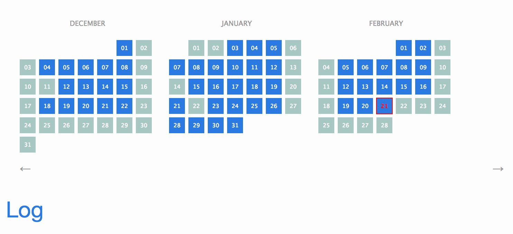

Project #meta ↩
Wed, Feb 21
- Finally got around to deploying the live demo!
Note: All of the daily log entries live in the _posts/ folder. There’s a folder for each month. Each month-folder contains one file named YYYY-MM-DD-XXXX.md where XXXX is some arbitrary name. This was a compromise because having a single file for each day is annoying for looking back and forth and having to create new files all the time. Also having a single file per year leads to an unwieldy, monster markdown file.
- You can also tag daily entries with project names like
#metaor#test2. These project names cannot have spaces. You can see posts categorized according to these tags under Projects. It looks something like this:
# 2018.02.21 #meta #test2
Section
- You can have sections and images

This is an image inside of a thought bubble
This is a quote
More thoughts
-
You can use my plugin for Atom,
atom-markdown-image-assistantto quickly insert images into your lab notebook. -
You can also include nice formatted code:
f(x) = x + x^2
"""
This is a Julia function
"""
function g()
result = 0
for i in 1:1000
result += f(i)
end
result
end